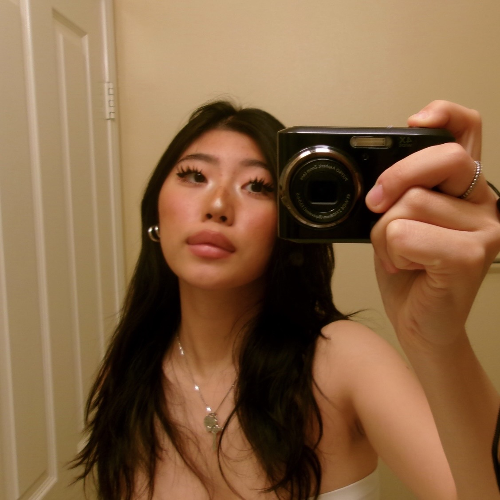

hi, i'm minha.
i'm a student at duke university majoring in mathematics, computer science, and minoring in philosophy.
i like to think about what makes us human, ai safety + ethics, and and how much of our world is governed by randomness, patterns, and things we cannot predict.
outside of that, i play hockey, read, and spend a lot of time thinking about the anaheim ducks and the dodgers.

a little about me
i speak korean, japanese, english, and spanish. i love coffee, energy drinks, açaí bowls, doraemon, and akb48.
i am a level 2 referee at USA Hockey (LAHOA), junior m&a analyst intern at Sellside Group, ai engineering intern at Dynamic Active, and i tutor math for fun in my free time :)
things i think about
ergodic theory, graph theory, mcmc, and ai ethics and safety — especially how technology changes our relationship with responsibility.
things i'm making
barnatlas (in progress) — a little home for discovering hockey rinks, sharing experiences, and keeping track of places visited. i wanted an online passport for hockey rinks, so i am building one!
between the pages
east of eden by john steinbeck, and the picture of dorian gray by oscar wilde, demian by hermann hesse.